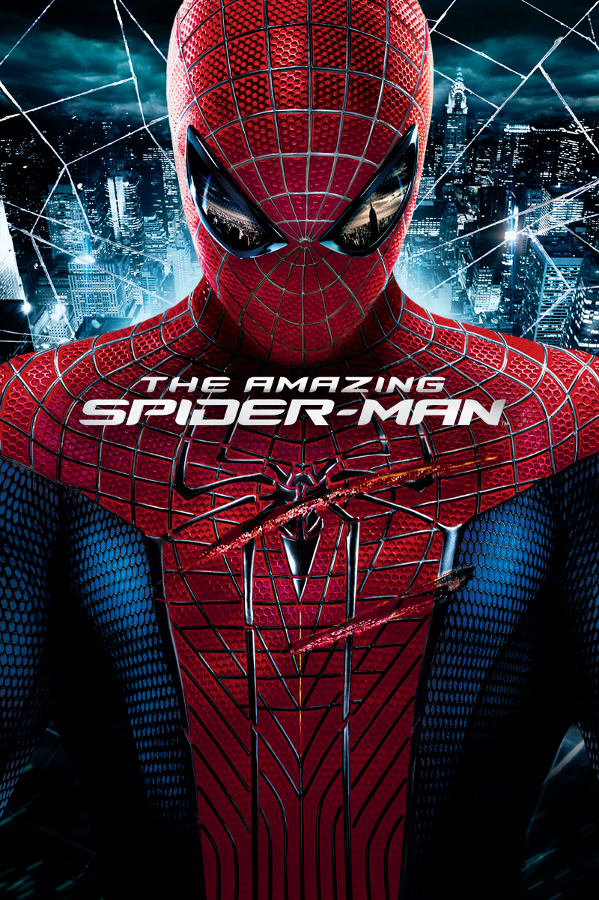
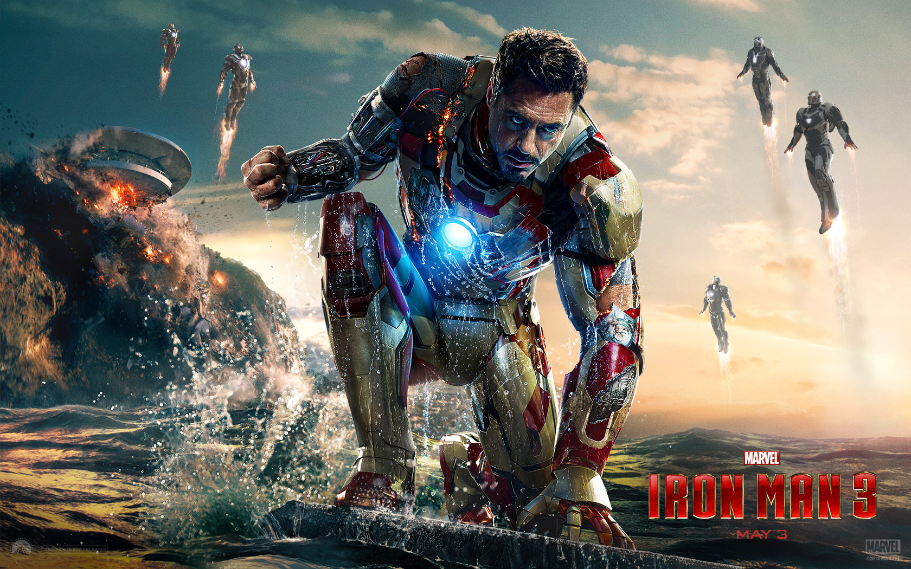

Peter Parker consigue finalmente un equilibrio entre su devoción por Mary Jane y sus deberes como superhéroe. Pero una tormenta amenaza en el horizonte. Cuando su traje cambia de repente, volviéndose negro y mejorando sus poderes, Peter también se transforma sacando el lado más oscuro y vengativo de su personalidad. Peter se vuelve demasiado confiado y comienza desatender a la gente que realmente se preocupa por él. Obligado a elegir entre el tentador poder del nuevo traje y el héroe que solía ser, Peter deberá vencer sus propios demonios, mientras dos de sus más temidos enemigos, Venom y el Hombre de Arena utilizarán sus poderes para calmar su sed de venganza.
Reparto:
Tobey Maguire
Kirsten Dunst
J. K. Simmons
Cliff Robertson
Reparto: Tobey Maguire, Kirsten Dunst, J. K. Simmons, Cliff Robertson
The Amazing Spiderman
The Amazing Spiderman

Sinopsis
Es la historia de Peter Parker, un estudiante de secundaria que fue abandonado por sus padres cuando era niño. Como la mayoría de los adolescentes, Peter trata de averiguar quién es y qué quiere llegar a ser. Peter también está encontrando su camino con su primer amor, Gwen Stacy. Cuando Peter descubre un misterioso maletín que perteneció a su padre, comienza la búsqueda para entender la desaparición de sus padres, una búsqueda que le lleva a Oscorp, el laboratorio del Dr Curt Connors, ex-compañero de trabajo de su padre. Mientras Spider-Man se encuentra en plena colisión con el Lagarto, Peter hará elecciones que alterarán sus opciones para usar sus poderes y darán forma a un destino que le convertirá en un héroe.
Reparto:
Andrew Garfield
Rhys Ifans
Martin Sheen
Chris Zylka
Reparto: Andrew Garfield, Rhys Ifans, Martin Sheen, Chris Zylka
Reparto: Andrew Garfield, Rhys Ifans, Martin Sheen, Chris Zylka
Captain America: Civil War
Captain America: Civil War
Sinopsis
Después de que otro incidente internacional en el que se ven envueltos los Vengadores produzca daños colaterales, la presión política obliga a poner en marcha un sistema para depurar responsabilidades y a crear un organismo que determine cuándo hay que recurrir a los servicios del equipo. El nuevo status que divide a los Vengadores en dos bandos, uno liderado por Steve Rogers y su deseo de mantener la libertad de actuación de los Vengadores a la hora de defender a la humanidad, y otro liderado por Tony Stark y su sorprendente decisión de apoyar los planes del Gobierno, mientras intentan proteger al mundo de un nuevo malvado.
Reparto:
Chris Evans
Robert Downey Jr.
Paul Rudd
Tom Holland
Reparto: Chris Evans, Robert Downey Jr., Paul Rudd, Tom Holland
Reparto: Chris Evans, Robert Downey Jr., Paul Rudd, Tom Holland
IronMan 3
IronMan 3

Sinopsis
En 'Iron Man 3' de Marvel, el descarado pero brillante empresario Tony Stark se enfrentará a un enemigo cuyo poder no conoce límites. Cuando Stark comprende que su enemigo ha destruido su universo personal, se embarca en una angustiosa búsqueda para encontrar a los responsables. Acorralado, Stark tendrá que sobrevivir por sus propios medios, confiando en su ingenio y su instinto para proteger a las personas que quiere. Durante su lucha, Stark conocerá la respuesta a la pregunta que le atormenta en secreto: ¿El hábito hace al monje o es al contrario?
Reparto:
Robert Downey Jr.
Don Cheadle
Paul Bettany
Gwyneth Paltrow
Reparto: Robert Downey Jr., Don Cheadle, Paul Bettany, Gwyneth Paltrow
Reparto: Robert Downey Jr., Don Cheadle, Paul Bettany, Gwyneth Paltrow